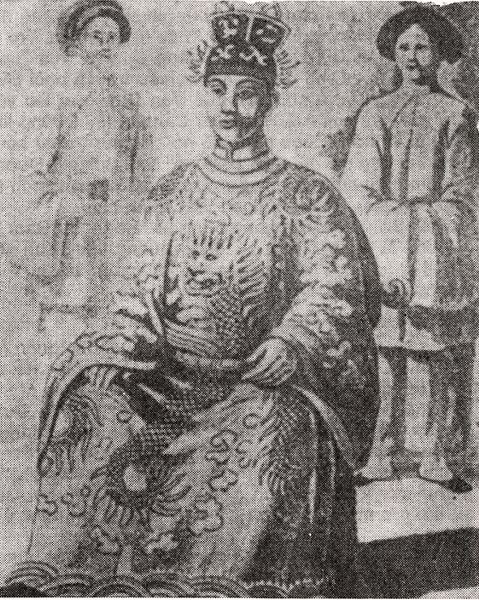

Bỗng một người học trò, tự xưng là học giả Lam Sơn đến hầu. Thái Tử thấy người học trò, đầu đội mũ cỏ, tay cầm câi gậy nhọn xiên qua bên mặt trời; tự nhiên mặt trời đùn đùn lên một đám mây đen sì, rồi tối sằm lại. Người học trò giơ gậy lên vẫy thì đám mây đen tan ngay, trời sáng bừng lên.
Thái Tử về cung đưa chuyện nằm mộng hỏi thị thần.
Quan Thái bộc đoán:
" Người học giả đầu đội nón cỏ là học trò, tên y có chử giả, thêm thảo dầu ( mũ cỏ ), là chữ Trứ. Chữ Trứ có nét phẩy cái sát qua chữ nhật, tức là cái gậy xiên qua mặt trời. Từ Lam Sơn lại, người ấy tất quê ở Nghệ An, Hà Tỉnh. Đám mây đen đùn lên ở mặt trời là điểm sau này biên thùy có lọan. Người ấy cầm gậy vẩy, mà đám mây đen tan, là điềm người ấy sau này sẻ dẹp tan giặc. Vậy xin Điện Hạ nghiệm xem khoa này có ai tên là Trứ ở vùng Nghệ An, Hà Tỉnh thi đổ không?
Thái Tử nghe lời. Đến khi quan trường chấm xong đệ danh sách vào Bộ Duyệt, thấy tên Nguyễn Công Trứ đỗ Thủ Khoa, Thái Tử Đảm mừng là ứng vào điềm mộng, quốc gia để tuyển được nhân tài chân chính. Thế là khoa ấy các quan chấm trường đều được thuởng một cấp
( Theo Dã Sử Hoài Sơn )

Vua Minh Mang